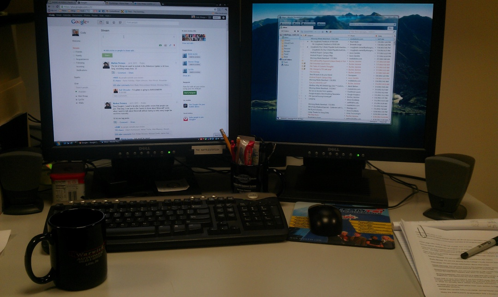
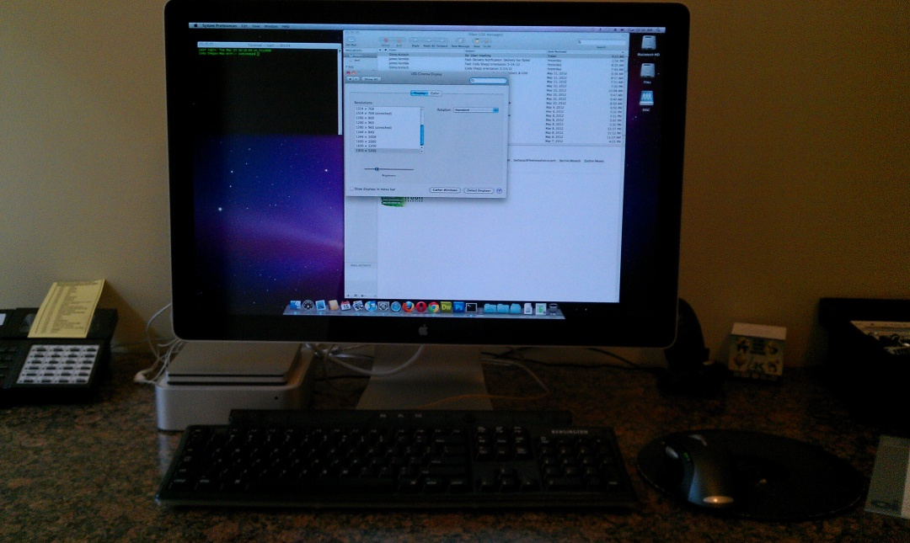
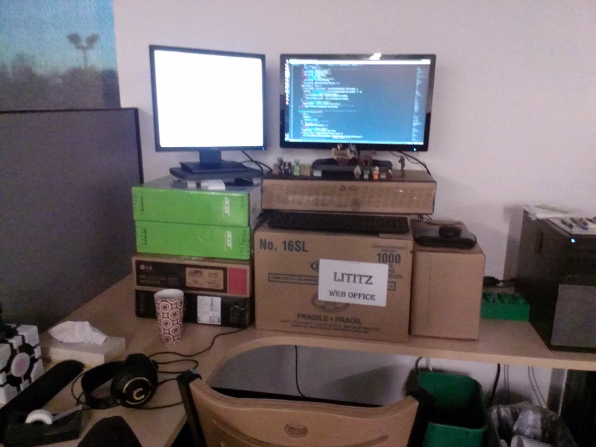
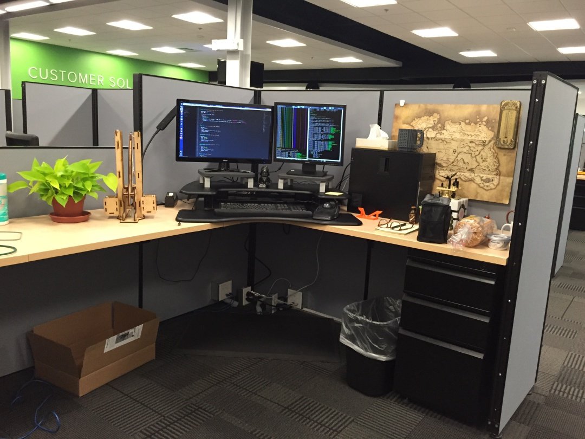
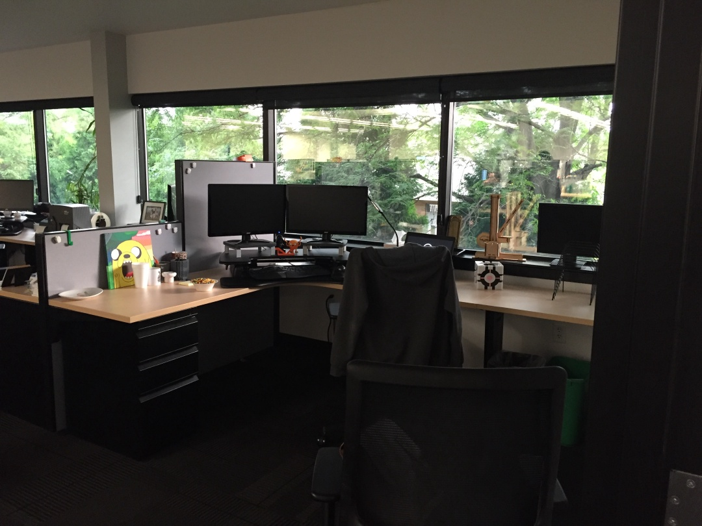

Work PC Setup
Here’s a brief look at my various workstations throughout my career.
2012⌗
 My very first tech job working for the college I attended…in a closet in the basement of a building on campus. Mostly performed maintenance on the college’s public and private websites which were built with WebForms in VB.
2013⌗
 First job out of college was a small marketing agency that was trying to transition from print to web. It was also a Mac shop.
2014⌗
 Second job out of college (still my current employer!). This was when the standing desk craze first started and several of us used cardboard boxes to achieve the desired effect …until the CIO brought some important folks through on a tour and then bought us all real sit/stand desks ;)
2016⌗
 Same monitors, real sit/stand desk. Also a plant, a map of Skyrim, and a trebuchet.
2018⌗
 Corner desk with a view (of some trees). I sat here until I started working from home full-time in February of 2020. Not pictured: AC vent directly above my chair.